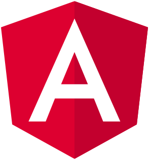

<mat-toolbar color="primary" class="toolbar toolbar-fixed mat-elevation-z8">
  <mat-toolbar-row class="toolbar toolbar-row">
    <button mat-icon-button (click)="sidenav.toggle()">
      <mat-icon>menu</mat-icon>
    </button>

    <div class="toolbar container-caption">
      <a href="/">
        <div class="toolbar container-caption-image">
          
        </div>
      </a>
      <div>ngular demo</div>
    </div>

    <span class="toolbar toolbar-spacer"></span>

    <span><mat-divider vertical class="toolbar vertical-divider"></mat-divider></span>

    <span>

      <a mat-icon-button="" href="https://github.com/aloz/ngdemo" target="_blank" title="GitHub" aria-label="Angular on github" class="mat-focus-indicator mat-icon-button mat-button-base" aria-disabled="false">
        <span class="mat-button-wrapper">
          <mat-icon role="img" svgicon="logos:github" class="mat-icon notranslate mat-icon-no-color" aria-hidden="true" data-mat-icon-type="svg" data-mat-icon-name="github" data-mat-icon-namespace="logos">
            <svg focusable="false" viewBox="0 0 51.8 50.4" xmlns="http://www.w3.org/2000/svg">
              <path d="M25.9,0.2C11.8,0.2,0.3,11.7,0.3,25.8c0,11.3,7.3,20.9,17.5,24.3c1.3,0.2,1.7-0.6,1.7-1.2c0-0.6,0-2.6,0-4.8
           c-7.1,1.5-8.6-3-8.6-3c-1.2-3-2.8-3.7-2.8-3.7c-2.3-1.6,0.2-1.6,0.2-1.6c2.6,0.2,3.9,2.6,3.9,2.6c2.3,3.9,6,2.8,7.5,2.1
           c0.2-1.7,0.9-2.8,1.6-3.4c-5.7-0.6-11.7-2.8-11.7-12.7c0-2.8,1-5.1,2.6-6.9c-0.3-0.7-1.1-3.3,0.3-6.8c0,0,2.1-0.7,7,2.6
           c2-0.6,4.2-0.9,6.4-0.9c2.2,0,4.4,0.3,6.4,0.9c4.9-3.3,7-2.6,7-2.6c1.4,3.5,0.5,6.1,0.3,6.8c1.6,1.8,2.6,4.1,2.6,6.9
           c0,9.8-6,12-11.7,12.6c0.9,0.8,1.7,2.4,1.7,4.7c0,3.4,0,6.2,0,7c0,0.7,0.5,1.5,1.8,1.2c10.2-3.4,17.5-13,17.5-24.3
           C51.5,11.7,40.1,0.2,25.9,0.2z"></path>
            </svg>
          </mat-icon>
        </span><span matripple="" class="mat-ripple mat-button-ripple mat-button-ripple-round"></span><span class="mat-button-focus-overlay"></span>
      </a>

    </span>
  </mat-toolbar-row>
</mat-toolbar>

<app-progress-request></app-progress-request>

<mat-sidenav-container class="workspace root">

  <mat-sidenav id="sidenav" #sidenav mode="side" opened="false">
    <div class="workspace leftmenu">

      <mat-card class="mat-elevation-z8">

        <mat-card-content>

          <div>
            <a mat-raised-button class="leftmenu-item" routerLinkActive="leftmenu-item-active" (click)="sidenav.toggle()"
               routerLink='dxsummit'>
              DX Summit realtime data
            </a>
          </div>

          <div>
            <a mat-raised-button class="leftmenu-item" routerLinkActive="leftmenu-item-active" (click)="sidenav.toggle()"
               routerLink='fm'>
              Fake Module
            </a>
          </div>

          <div>
            <a mat-raised-button class="leftmenu-item" routerLinkActive="leftmenu-item-active" (click)="sidenav.toggle()"
               routerLink='xxx'>Wrong link</a>
          </div>

        </mat-card-content>


      </mat-card>

    </div>
  </mat-sidenav>

  <mat-sidenav-content>

    <div class="workspace content">

      <router-outlet></router-outlet>

    </div>

  </mat-sidenav-content>
</mat-sidenav-container>

<footer>
  <div class="footer">
    <div class="thetext">
      Made just for fun during my self-education in Angular and Angular Material<br />
      (c) Copyright Anton Lozovskyi, 2022
    </div>
  </div>
</footer>
